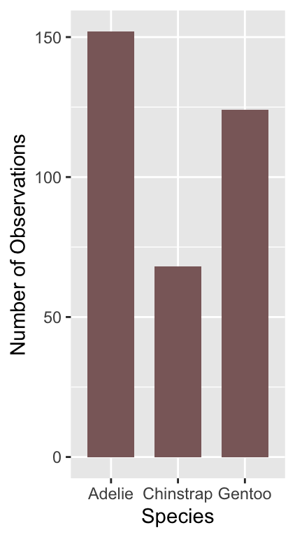
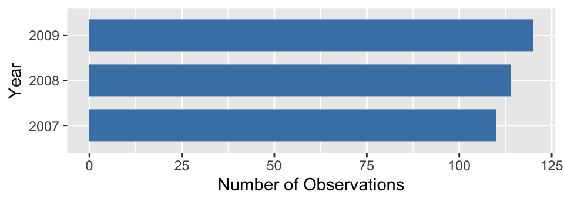

Chapter 18 Building in complexity
18.1 Multivariate relationships
We examined various plots that summarise associations between two variables in the last chapter. How do we explore relationships between more than two variables in a single graph? That is, how do we explore multivariate associations? It’s difficult to give a concrete answer to this question, because it depends on the question we’re trying to address, the kinds of variables we’re working with, and to a large extent, our creativity and aptitude with an advanced graphing framework like ggplot2. Nonetheless, we already know enough about how ggplot2 works to build some fairly sophisticated visualisations. There are two ways to add additional information to a visualisation:
Define aesthetic mappings to allow the properties of a layer to depend on the different values of one or more variable.
Use faceting to construct a multipanel plot according to the values of categorical variables.
We can adopt both of these approaches at the same time, meaning we can get information form 4-6 variables into a single graph if we need to (though this does not always produce an easy-to-read plot). We’ve already seen these two approaches used together in the Introduction to ggplot2 chapter. We’ll look at one more example to illustrate the approach again.
We want to understand how the sample distribution of wind speed during a storm varies over the course of a year. We also want to visualise how this differs among storm categories. One way to do this is to produce a stacked histogram for each month of the year, where the colour of the stacked histograms changes with respect to storm category. We do this using the facet_wrap function to specify separate panels for each month, colouring the histograms by the type variable. Stacking the histograms happens by default:
ggplot(storms_alter, aes(x = wind, fill = type)) +
geom_histogram(binwidth = 15) +
xlab("Wind Speed (mph)") + ylab("Count") +
labs(fill = "Storm Type") +
facet_wrap(~ month, ncol = 3)
Notice that we’re using storms_alter from the last chapter, the version of storms where the type variable was converted to a factor. We haven’t used any new tricks here though. We just set a couple of aesthetics and used faceting to squeeze many histograms onto one plot. It mostly shows that if we’re planning a holiday in Central America we should probably avoid travelling from August to October…
18.2 Comparing descriptive statistics
Until now we have been focusing on plots that display either the raw data (e.g. scatter plots), or a summary of the raw data that captures as much detail as possible (e.g. histograms and box plots). We’ve tended to treat descriptive statistics like the sample mean as ‘a number’ to be examined in isolation. These are often placed in the text of a report or in a table. However, there’s nothing to stop us visualising a set of means (or any other descriptive statistics) and a figure is much more informative than than a table. Moreover, many common statistical tools focus on a few aspects of sample distributions (e.g. means and variances) so it’s a good idea to plot these.
We need to know how construct graphs that display such summaries. Let’s start with a simple question: how does the (arithmetic) mean wind speed vary across different types of storm? One strategy is to produce a bar plot in which the lengths of the bars represent the mean wind speed in each category. There are two different ways to produce this with ggplot2.
The first is simplest, but requires a new ggplot2 trick. When we add a layer using geom_bar we have to set two new arguments. The first is stat = "summary". This tells ggplot2 not to plot the raw values of the y aesthetic mapping, but instead, to construct a summary of the ‘y’ variable. The second argument is fun.y = mean. This tells ggplot2 how to summarise this variable. The part on the right hand side can be any R function that takes a vector of values and returns a single number. Obviously we want the mean function. See how this works in practice:
ggplot(storms_alter, aes(x = type, y = wind)) +
geom_bar(stat = "summary", fun.y = mean) +
coord_flip() +
xlab("Storm Category") + ylab("Mean Wind Speed (mph)")## Warning: Ignoring unknown parameters: fun.y## No summary function supplied, defaulting to `mean_se()`
We also flipped the coordinates here with coord_flip to make this a horizontal bar plot. We’ve seen this before in the Exploring categorical variables chapter. The only new idea is our use of the stat and fun.y arguments.
The second way to build a bar plot showing some kind of summary statistic breaks the problem into two steps. In the first step we have to calculate whatever it is we want to display, i.e. the category-specific mean in this case. This information needs to be stored in a data frame or tibble so dplyr is the best tool to use for this:
storms_sum <-
storms_alter %>%
group_by(type) %>%
summarise(mean_wind = mean(wind))
storms_sum## # A tibble: 4 x 2
## type mean_wind
## <fct> <dbl>
## 1 Tropical Depression 27.4
## 2 Extratropical 40.1
## 3 Tropical Storm 47.3
## 4 Hurricane 84.7We used group_by and summarise to calculate the set of means, which we called mean_wind. The second step uses the new data frame (called storms_sum) as the default data in a new graphical object, sets x and y aesthetic mappings from type and mean_wind, and adds a layer with geom_col:
mean.plt <-
ggplot(storms_sum, aes(x = type, y = mean_wind)) +
geom_col() +
coord_flip() + xlab("Storm Category") + ylab("Mean Wind Speed (mph)")
mean.plt
The result is the same as the last plot. Note that we have used geom_col instead of geom_bar here. Remember here that the default behaviour of geom_bar is to count the observations in each category. Using the geom_col function tells it that the information in mean_wind must be plotted ‘as is’ instead.
Which approach is better? The first approach is more compact though. We recommend the second long-winded way approach for new users because it separates the summary calculations from the plotting. This way, as long as we’re comfortable with dplyr, we can get away with remembering less about how ggplot2 works. It also makes it a bit easier to fix mistakes, as we can first check whether the right information is in the summary data frame, before we worry about plotting it.
The two-step method is easy to extend to different kinds of plots as well. An example will help to clarify what we mean by this. Remember the wind speed vs. atmospheric pressure scatter plots we first produced? One criticism of those plots is that they don’t really summarise differences among storm events. We plotted all the data, which means a storm system that lasts a long time contributes relatively more points to the plot than a short storm.
Why not plot the storm-specific means instead? We know how to do this using dplyr and ggplot2. First construct a new data frame containing the means:
storms_means <-
storms_alter %>%
group_by(name) %>%
summarise(wind = mean(wind), pressure = mean(pressure))Then it is just a matter producing a scatter plot with the new data frame. There are no new tricks to learn:
ggplot(storms_means, aes(x = pressure, y = wind)) +
geom_point(alpha = 0.8) +
xlab("Atmospheric Pressure (mbar)") + ylab("Wind Speed (mph)")